エリア担当者向け
前回の資料（10月5日）のあとに入った変更 ／ 2026年10月15日 ワンズスタイル本部（髙橋）
送迎表で送りの座席・運転者・到着と出発の時間まで決められるようになり、日誌は「送迎表取込」を押すだけで送迎の欄が埋まる形になりました。紙の座席表を書いて、日誌に時間と運転者を書き写す手間がなくなります。
| 画面 | 変わったこと | 配信 | ページ |
|---|---|---|---|
| 送迎表 | 送りを「座席表」で決める（席・送りの順番・運転者・出発時間・ダウンロード） | 全店 | 2〜3 |
| 送迎表 | 各車の最後に「施設に到着」の時間。自動計算は事業所情報の開始時間の1分前に着くように | 全店 | 4 |
| 送迎表 | 変更内容の一覧と「連絡済」・スマホの運転手向け1日リスト・送迎時の連絡先 など | 全店 | 5 |
| 日誌 | 送迎表取込で運転者・到着・出発も入る／時間の確認／兼務（副役職）のチェック | 全店 | 6 |
| 提供記録 入力 | 気分のあとに特記へ書く内容／並び替え／血圧の再測定／テンキー | 全店 | 7 |
| その他 | 体力測定・連絡帳・クラス在籍表・利用者マスタ・休み連絡・スマホ/iPad・管理局 など | 全店 本部 | 8 |
| LIFE・計画書 | 導入の進め方と今の状況・画面の紹介 | 試験版 | 9〜11 |
| 不具合の修正 | 10月5日〜15日の主な修正 | 全店 | 12 |
| よくある質問 | 店舗から聞かれそうなことと答え方 | ― | 13 |
店舗で使っている紙の座席表（車の絵に名前を書いて、送りの順番を決めるもの）を、つむぎの画面でできるようにしました。
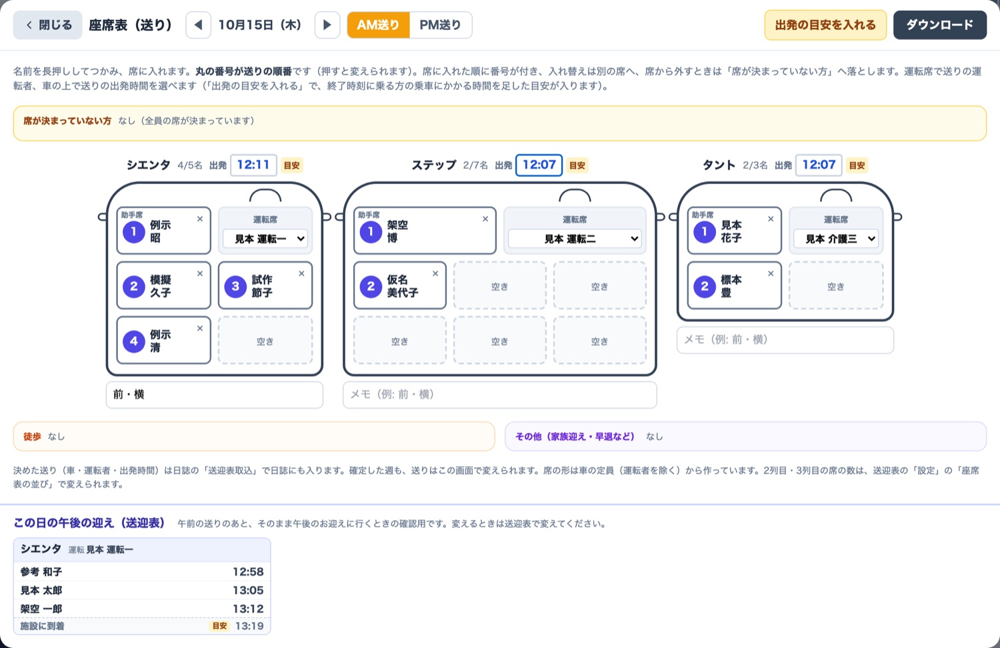
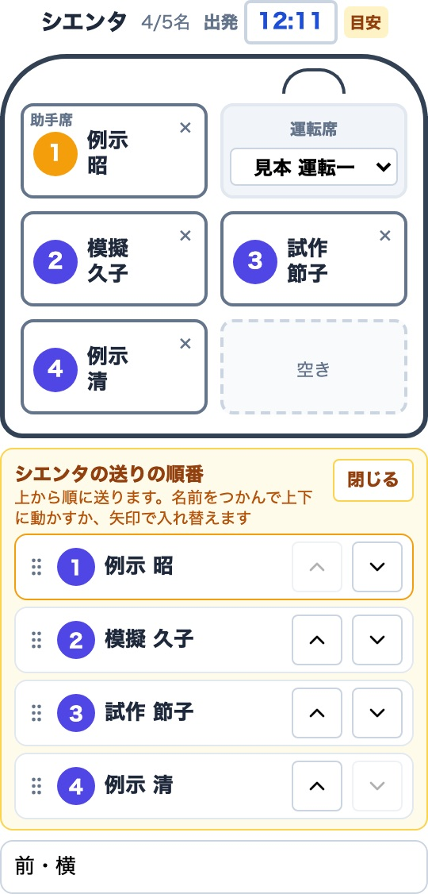
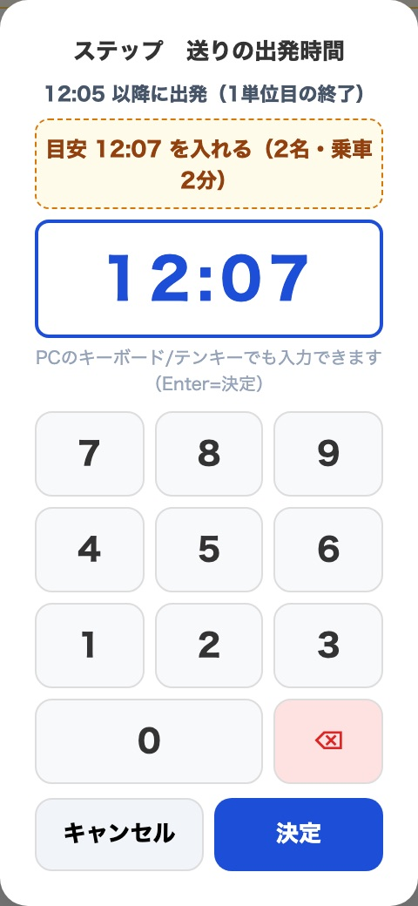
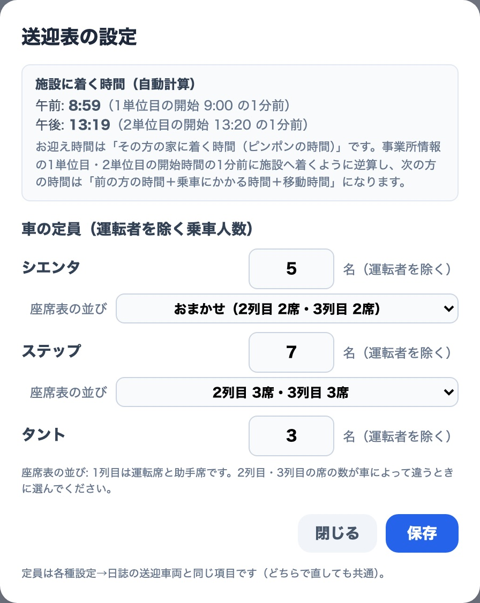
迎えの各車の、最後の方の下に「施設に到着」の欄が付きました。ここまで送迎表で入れておけば、日誌は取込だけで済みます。
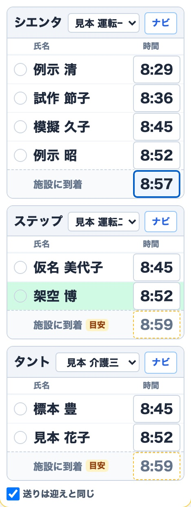
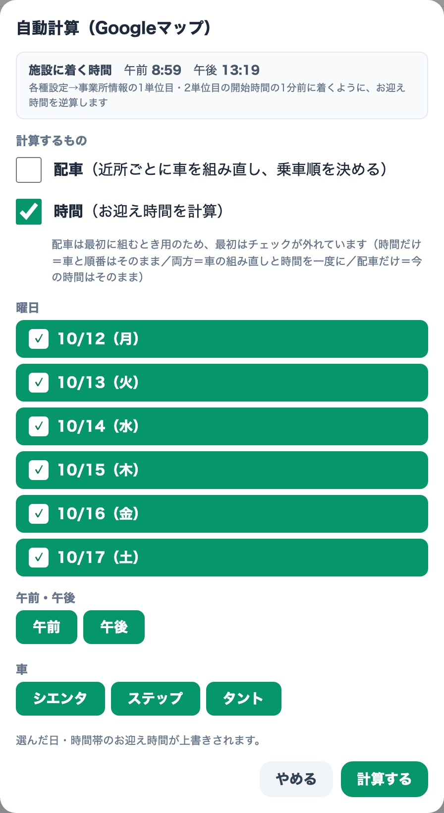
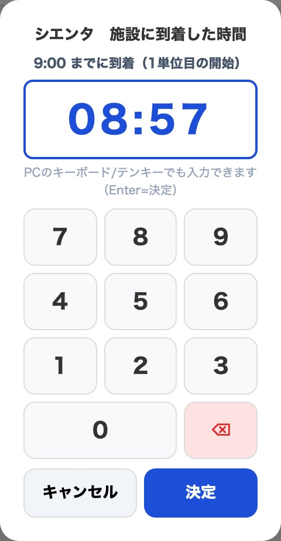
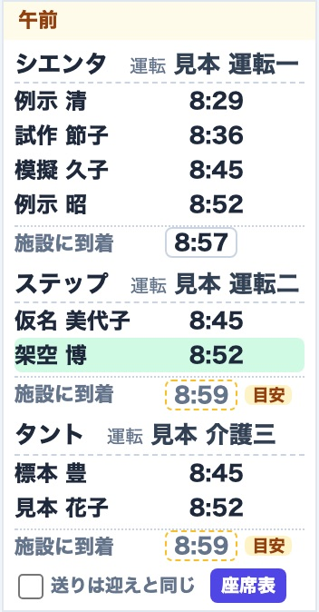
お迎え時間を入れると、その車の乗る順が自動で時間順にそろいます。入力画面・運行表（印刷）・スマホの1日リストで順番が食い違わなくなります。
運転者の位置、車名の大きさ、休みの方の名前の大きさ、余白を整えました。凡例は「時間の赤枠＝時間変更／緑＝振替／水色＝初回」の3つです。確定後の表示でも振替は緑・初回は水色、未割当は徒歩（オレンジ）と見分けやすい赤みの点線です。
各種設定の「送迎表を使う」を外すと、送迎表まわりの表示（ホームのお知らせ・日誌の送迎表取込など）が出なくなります（作った送迎表は消えません）。各種設定の「サイドバー」タブで、使わない画面をメニューから隠せます。
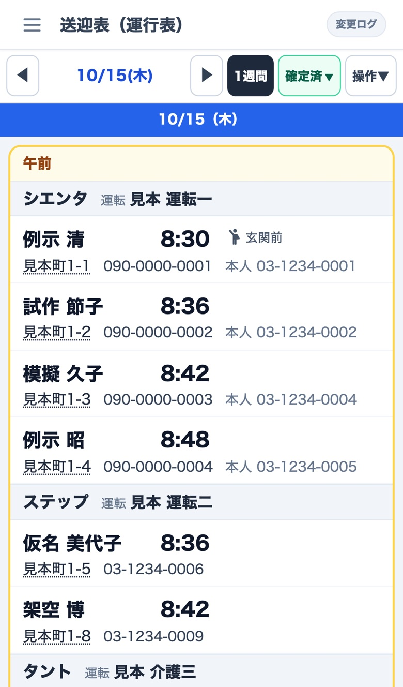
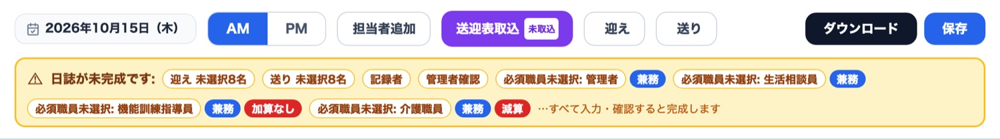
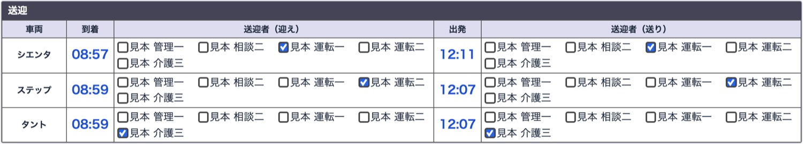
日誌にすでに違う時間が入っている車は、上書きするかを確認します（キャンセル＝日誌の時間のまま）。送迎表で「目安」のままの時間は、入れるかを確認します。目安を実際の時間として黙って記録に入れないためです。
各種設定のこの設定は、その日の送迎表が保存されている日はコピーしません（送迎表取込で入れます）。先週の割り当てが日誌に残ったまま、取り込み忘れになるのを防ぐためです。送迎表が無い日や、送迎表を使わない店舗では今までどおりコピーします。
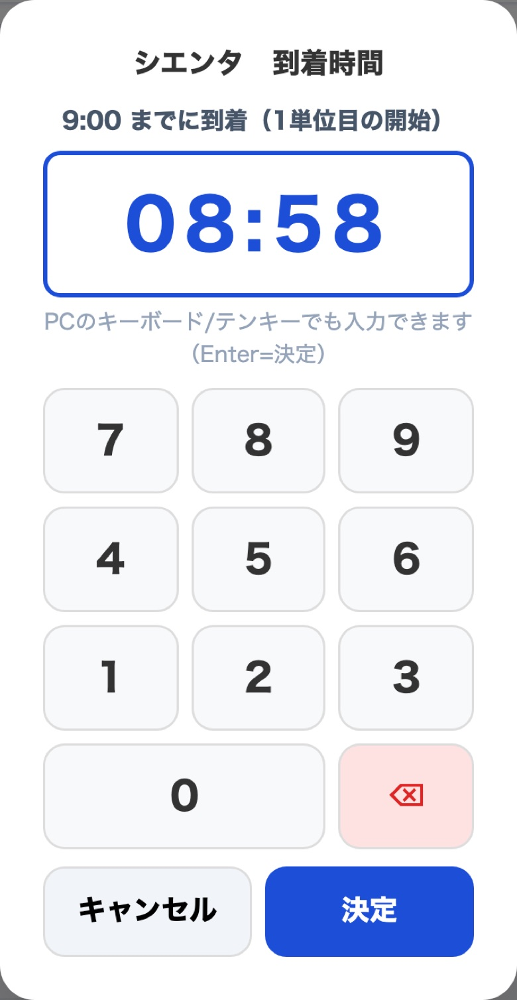
到着が提供時間の開始（例 9:00）を過ぎるとき、出発が終了（例 12:05）より前のときは「このまま登録してよろしいですか？」と確認が出ます。テンキーにも「9:00 までに到着」と目安が出ます。時間は事業所情報の1単位目・2単位目を使います。
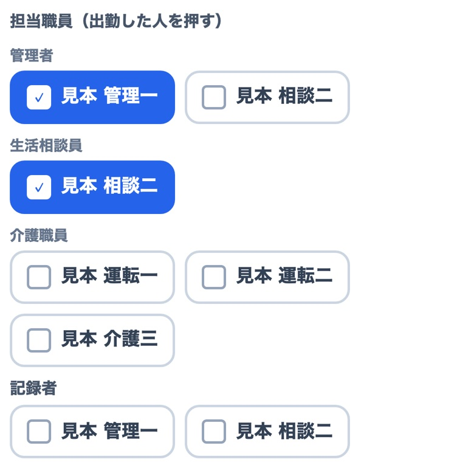
例：生活相談員で、管理者がいない日だけ管理者も兼ねる方。本来の役職の欄を押すと出勤だけ、管理者の欄を押すと「その日は管理者も兼ねる」になります。管理者が出勤している日に、管理者が2人いるように見えることがなくなりました。
10月15日より前の日誌は、今までどおりの見え方です。
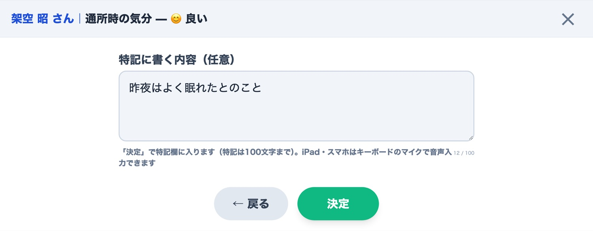
「AM/PM」の横の「並び替え」で、利用者の並び順を自由に変えられます（名前を長押しして上下、または「上へ」「下へ」→「この順で保存」）。並び順は店舗の全端末で同じです。欠席・休止の方は今までどおり下にまとまります。
再測定の控えは「削除」ではなく「戻す」になりました。押すと、その回の値が欄に戻ります（1つ前に戻す）。
「15秒×2」などが見切れる、既定の運動を「未設定」にしても戻る、削除した運動が残る、同じ運動が2つの欄に出る、提供記録で「—」に戻せない、といった不具合を直しました（12ページ）。
| 画面 | 変わったこと |
|---|---|
| 体力測定 | 全部の測定項目の推移グラフ・「最高」「最低」の列・入力したまま別の方を選ぶと「保存しますか？」／項目の並び替え・左右をまとめた項目（握力など）／対象者を「全員・AM・PM」で絞り込み／要介護の方は要介護の測定周期で数えるように |
| 連絡帳 | フォーマット設定を連絡帳と同じ2列の並びで編集（項目名10文字・表示文字12文字まで・反映方法は「自由／連携」）／体温が未入力でも「℃」の位置をそろえる／印刷の穴あけの目印を「▲」に |
| クラス在籍表 | 画面と印刷の見た目を整理（氏名と介護度を並べる・下段は「10／10名 空き 0名」・印刷は用紙の幅いっぱい）／休止中の方は名前の右に丸囲みの「休」 |
| 利用者マスタ | 休止の開始日が先なら、前日までは「利用中（休止予定）」／「削除」ボタンは管理者だけに表示／利用者名簿CSV：被保険者番号・電話の先頭のゼロを戻して取り込む・フェイスシートの項目も取り込める |
| 休み連絡・各種連絡 | 氏名マスキングを画面の送付状にも反映・前回の設定を覚える／スマホでダウンロードしてもパソコンと同じ大きさ／スマホのカレンダーは名前と「連絡済」などを2段で表示 |
| 写真・検索 | 書類の写真を登録の前後に回転できる・画面に収まる大きさで表示／ひらがなで入力しても利用者が出る |
| 各種設定 | 「サイドバー」タブ（使わない画面を隠す）・「送迎表を使う」・テンキーの数字の並び |
| ご家族・ケアマネ画面 | 見られる方の記録だけを読み込むように（通信量を大きく減らし、表示が速く） |
| スマホ | 画面の上部（日付・AM/PM・保存）を固定し、たまに使うボタンは「操作」の中へ／1行目の日付を押すと日付を選べる／iPhoneはピンチで拡大・縮小（最大4倍）／サイドバーは最初は閉じた状態・項目を押したら自動で閉じる |
| iPad | 横向きで画面が少し大きく左右にずれる件、ログイン後などに見出し・上部が白い／掠れて見える件の対策（10月5日〜11日に重ねて対策） |
| 全画面共通 | ポップアップの外でスクロールすると後ろの画面が動く件を修正／上のボタン列が2行になっても、右寄せのボタンは右に |
| 管理局 本部 | 店舗情報の編集で郵便番号から住所を検索・建物名の欄・保存するとその店舗の「事業所情報」にも反映／管理局のトップに「本部の手順書」（国保連の電子請求の代理人申請の準備など） |
LIFE（科学的介護情報システム）への提出を、つむぎで行えるように準備しています。今は扇橋店で確かめている段階で、全店への配信はまだです。店舗から聞かれたら「本部で準備中。準備が済んだ店舗から順にご案内します。それまでは今までどおり」とお伝えください。
| 今の状況（10月15日） | |
|---|---|
| 済 | 4つの様式の提出用ファイル（新LIFEの最新の決まりに対応） |
| 済 | まるっとLIFEの Excel からの取込（移行） |
| 済 | 扇橋店の2名分（10月分）で、まるっとLIFEの出力と突き合わせ → 3様式とも一致 |
| 済 | 新LIFEへのログイン確認（扇橋店・要介護と総合事業の2つのアカウント） |
| 進行中 | 扇橋店で試験版の画面を確認（作成予定・利用者ごと・LIFE提出） |
| これから | 11月10日までの提出（10月の評価分）を、扇橋店でつむぎから行う |
| これから | 問題がなければ全店へ配信 → 店舗ごとに準備して、順に切り替え |
| 予定 | 栄養・口腔の様式（使う店舗のみ） |
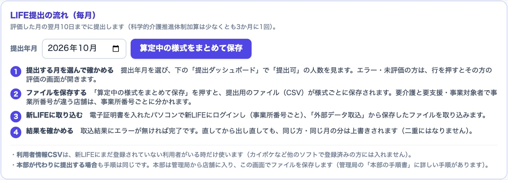
メニューの「計画書 → 個別機能訓練・LIFE」は、上のタブ 「作成予定」「利用者ごと」「LIFE提出」 の3つに整理しました。
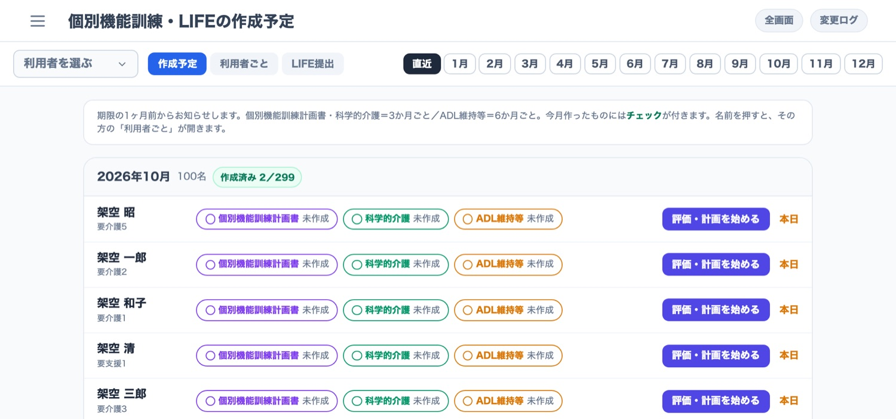
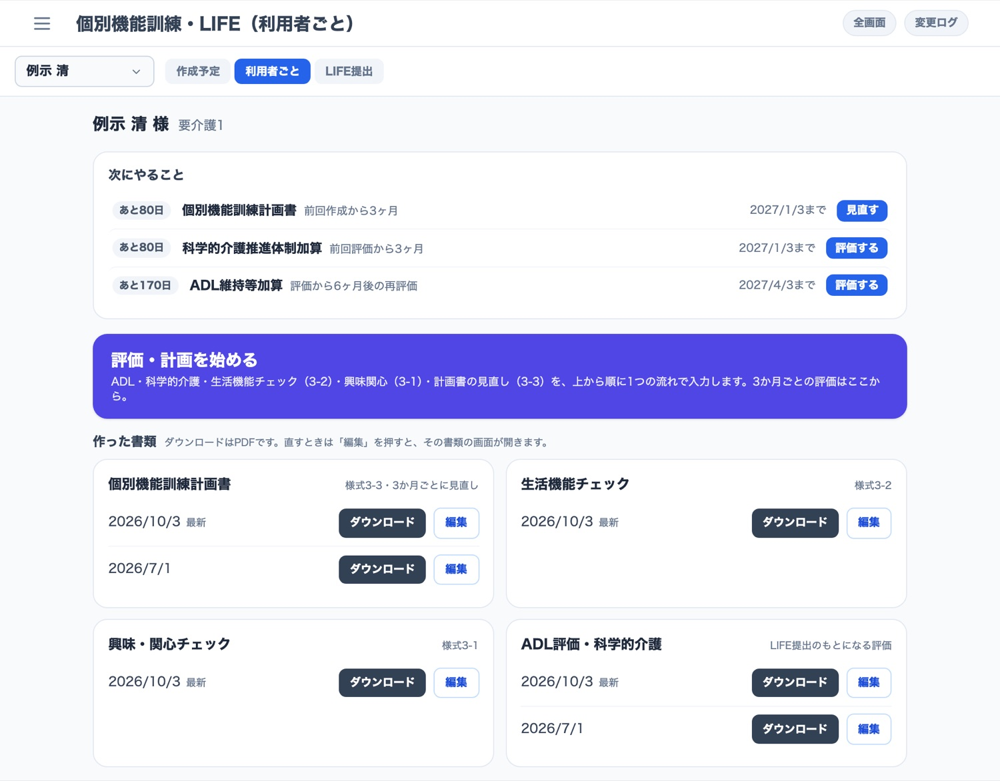
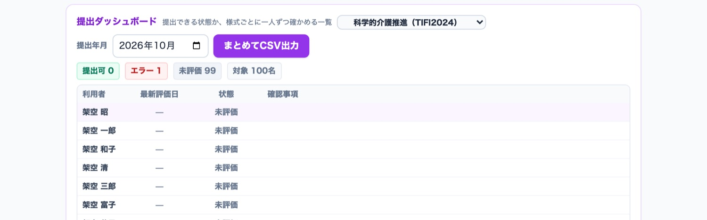
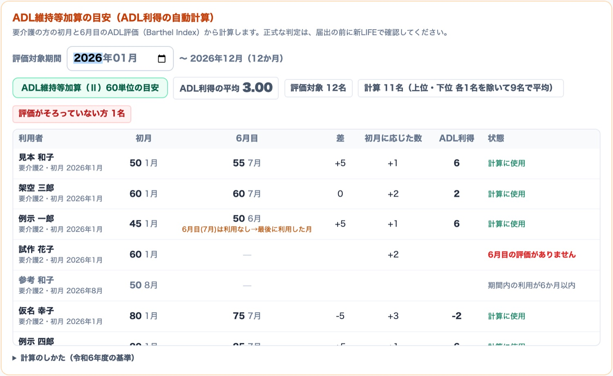
このページと前の2ページの新しい画面（作成予定・利用者ごと・LIFE提出）は、扇橋店の試験版だけです。ほかの店舗は、全店へ配信するまで今までの画面のままです。
店舗ごとの切り替えは、本部が準備の状況を確かめながら進めます。導入の順番や時期が決まりしだい、あらためてお知らせします。
新しい順です。どれもアプリを開き直すと直っています（店舗の操作は不要）。
| 日付 | 画面 | 内容 |
|---|---|---|
| 10/15 | 日誌 | 兼務（副役職）の方の名前を押すと、本来の役職と副役職の両方にチェックが付く |
| 10/15 | 休み連絡（スマホ） | 「連絡済」などの表示に押されて名前が潰れて見えない |
| 10/15 | 休み連絡・各種連絡 | スマホでダウンロードすると書類が小さくなる |
| 10/15 | 提供記録（スマホ） | サービス提供記録の罫線（格子）が見えない |
| 10/15 | 全画面 | ポップアップの外でスクロールすると、後ろの画面が動く |
| 10/14 | 災害時 | 「ご家族のメール登録が無い利用者」の人数が、選んだ対象ではなく全員で数えられていた |
| 10/14 | 体力測定 | 要介護の方が、要支援・事業対象者の測定周期で数えられていた |
| 10/14 | 利用者マスタ | 開始日が先の休止を設定すると、すぐに「休止」扱いになる／スマホで休止履歴の理由が縦に折れる |
| 10/14 | 送迎表（スマホ） | 1週間の表示で、時間が名前に重なる・はみ出す |
| 10/14 | 各種設定 | 事業所情報が、別の端末の受信で消えることがある |
| 10/13 | 個別運動 | 既定の運動を「未設定」にしても戻る・削除した運動が残る・同じ運動が2つの欄に出る・提供記録で「—」に戻せない |
| 10/13 | 連絡帳 | 再検で血圧を空にして脈だけ入れたとき、1回目の血圧が混ざる |
| 10/12 | 提供記録 | 個別運動の「15秒×2」などが見切れる |
| 10/9〜11 | iPad | ログインした直後・全画面を閉じたあとなどに、見出しや上部のメニューが白い／掠れて見える（対策を重ねて解消） |
| 10/9 | スマホ | 向きを変えるとエラーになる・欄が重なる・メニューが消える／画面が白くなる・上部が揺れる／「新しいバージョンがあります」の表示が崩れる |
| 10/9 | iPad・パソコン | 画面の上部（日付・ボタンなど）がスクロールで流れてしまう |
| 10/8 | 提供記録 | 個別運動の種目名・基準値が見切れる |
| 10/7 | 全体 | 長時間開いたままにすると「問題が発生しました（エラーコード5）」で落ちることがある |
| 10/7 | 日誌 | 欠席・休止・休業の方が載らないことがある／利用者がいない行に、ほかの方の車が表示される |
| 10/7 | 提供記録 | スマホの縦画面での入力の不具合／並び替えで振替・臨時の方の順番 |
| 10/7 | 招待 | 招待を削除しても消えない・ちらつく |
| 10/7 | 書類 | ケアマネのFAX・電話番号が出ない／フェイスシートのダウンロードに項目が載らない／事業所情報（郵便番号・事業所番号・建物名）が各種設定どおりに出ない |
| 10/7 | 利用者マスタ | 既往歴が古い内容で上書きされることがある |
| 10/5 | iPad | 無印（第8世代など）で画面が少し大きく、左右にずれる |
| 10/5 | ご家族・ケアマネ | 9月上旬より後の記録が出ないことがある |
不具合・要望は、これまでどおり店舗から本部（髙橋）へ直接ご連絡ください。エリア担当者の皆さまは、店舗から聞かれたときの一次回答にこの資料をお使いください。